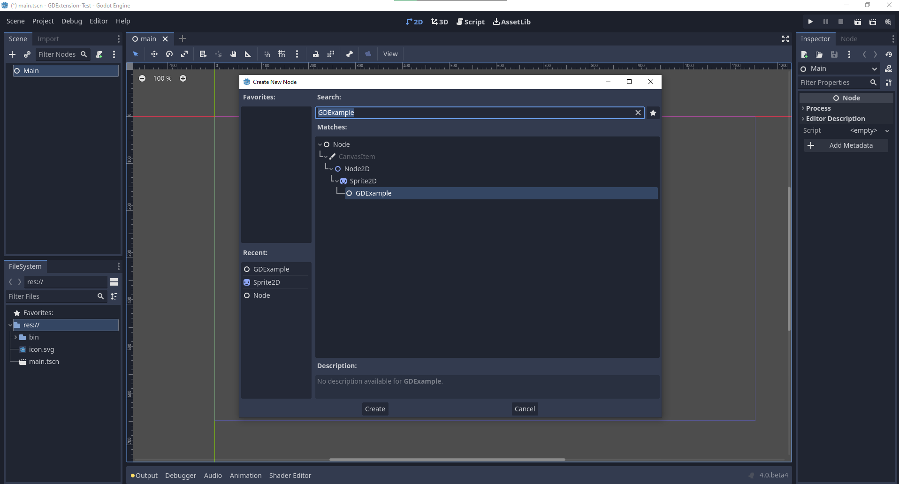
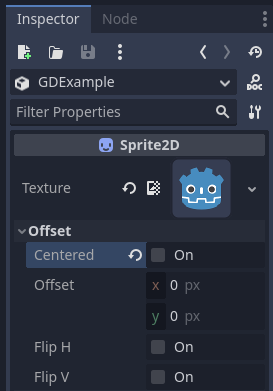

Getting started
Workflow overview
As a GDExtension, godot-cpp is more complicated to use than GDScript and C#. If you decide to work with it, here's what to expect your workflow to look like:
Create a new godot-cpp project (from the template, or from scratch, as explained below).
Develop your code with your favorite IDE locally.
Build and test your code with the earliest compatible Godot version.
Create builds for all platforms you want to support (e.g. using GitHub Actions).
Optional: Publish on the Godot Asset Store.
Example project
For your first godot-cpp project, we recommend starting with this guide to understand the technology involved with
godot-cpp. After you're done, you can use the godot-cpp template,
which has better coverage of features, such as a GitHub action pipeline and useful SConstruct boilerplate code.
However, the template does not explain itself to a high level of detail, which is why we recommend going through this
guide first.
Setting up the project
There are a few prerequisites you'll need:
A Godot 4 executable.
A C++ compiler.
SCons as a build tool.
A copy of the godot-cpp repository.
See also Configuring an IDE and Compiling as the build tools are identical to the ones you need to compile Godot from source.
You can download the godot-cpp repository from GitHub or let Git do the work for you. Note that this repository has different branches for different versions of Godot. GDExtensions will not work in older versions of Godot (only Godot 4 and up) and vice versa, so make sure you download the correct branch.
Note
To use GDExtension
you need to use the godot-cpp branch that matches the version of Godot that you are
targeting. For example, if you're targeting Godot 4.1, use the 4.1 branch. Throughout
this tutorial we use 4.x, which will need to be replaced with the version of Godot you
are targeting.
The master branch is the development branch which is updated regularly
to work with Godot's master branch.
Warning
GDExtensions targeting an earlier version of Godot should work in later minor versions, but not vice-versa. For example, a GDExtension targeting Godot 4.2 should work just fine in Godot 4.3, but one targeting Godot 4.3 won't work in Godot 4.2.
There is one exception to this: extensions targeting Godot 4.0 will not work with Godot 4.1 and later (see Updating your GDExtension for 4.1).
If you are versioning your project using Git, it is recommended to add it as a Git submodule:
mkdir gdextension_cpp_example
cd gdextension_cpp_example
git init
git submodule add -b 4.x https://github.com/godotengine/godot-cpp
cd godot-cpp
git submodule update --init
Alternatively, you can also clone it to the project folder:
mkdir gdextension_cpp_example
cd gdextension_cpp_example
git clone -b 4.x https://github.com/godotengine/godot-cpp
Note
If you decide to download the repository or clone it into your folder, make sure to keep the folder layout the same as we've setup here. Much of the code we'll be showcasing here assumes the project has this layout.
If you cloned the example from the link specified in the introduction, the submodules are not automatically initialized. You will need to execute the following commands:
cd gdextension_cpp_example
git submodule update --init
This will initialize the repository in your project folder.
Creating a simple plugin
Now it's time to build an actual plugin. We'll start by creating an empty Godot project in which we'll place a few files.
Open Godot and create a new project. For this example, we will place it in a
folder called project inside our GDExtension's folder structure.
In our project, we'll create a scene containing a Node called "Main" and
we'll save it as main.tscn. We'll come back to that later.
Back in the top-level GDExtension module folder, we're also going to create a
subfolder called src in which we'll place our source files.
You should now have project, godot-cpp, and src
directories in your GDExtension module.
Your folder structure should now look like this:
gdextension_cpp_example/
|
+--project/ # game example/demo to test the extension
|
+--godot-cpp/ # C++ bindings
|
+--src/ # source code of the extension we are building
In the src folder, we'll start with creating our header file for the
GDExtension node we'll be creating. We will name it gdexample.h:
#pragma once
#include <godot_cpp/classes/sprite2d.hpp>
namespace godot {
class GDExample : public Sprite2D {
GDCLASS(GDExample, Sprite2D)
private:
double time_passed;
protected:
static void _bind_methods();
public:
GDExample();
~GDExample();
void _process(double delta) override;
};
} // namespace godot
There are a few things of note to the above. We include sprite2d.hpp which
contains bindings to the Sprite2D class. We'll be extending this class in our
module.
We're using the namespace godot, since everything in GDExtension is defined
within this namespace.
Then we have our class definition, which inherits from our Sprite2D through a
container class. We'll see a few side effects of this later on. The
GDCLASS macro sets up a few internal things for us.
After that, we declare a single member variable called time_passed.
In the next block we're defining our methods, we have our constructor and destructor defined, but there are two other functions that will likely look familiar to some, and one new method.
The first is _bind_methods, which is a static function that Godot will
call to find out which methods can be called and which properties it exposes.
The second is our _process function, which will work exactly the same
as the _process function you're used to in GDScript.
Let's implement our functions by creating our gdexample.cpp file:
#include "gdexample.h"
#include <godot_cpp/core/class_db.hpp>
using namespace godot;
void GDExample::_bind_methods() {
}
GDExample::GDExample() {
// Initialize any variables here.
time_passed = 0.0;
}
GDExample::~GDExample() {
// Add your cleanup here.
}
void GDExample::_process(double delta) {
time_passed += delta;
Vector2 new_position = Vector2(10.0 + (10.0 * sin(time_passed * 2.0)), 10.0 + (10.0 * cos(time_passed * 1.5)));
set_position(new_position);
}
This one should be straightforward. We're implementing each method of our class that we defined in our header file.
Note our _process function, which keeps track of how much time has passed
and calculates a new position for our sprite using a sine and cosine function.
There is one more C++ file we need; we'll name it register_types.cpp. Our
GDExtension plugin can contain multiple classes, each with their own header
and source file like we've implemented GDExample up above. What we need now
is a small bit of code that tells Godot about all the classes in our
GDExtension plugin.
#include "register_types.h"
#include "gdexample.h"
#include <gdextension_interface.h>
#include <godot_cpp/core/defs.hpp>
#include <godot_cpp/godot.hpp>
using namespace godot;
void initialize_example_module(ModuleInitializationLevel p_level) {
if (p_level != MODULE_INITIALIZATION_LEVEL_SCENE) {
return;
}
GDREGISTER_CLASS(GDExample);
}
void uninitialize_example_module(ModuleInitializationLevel p_level) {
if (p_level != MODULE_INITIALIZATION_LEVEL_SCENE) {
return;
}
}
extern "C" {
// Initialization.
GDExtensionBool GDE_EXPORT example_library_init(GDExtensionInterfaceGetProcAddress p_get_proc_address, const GDExtensionClassLibraryPtr p_library, GDExtensionInitialization *r_initialization) {
godot::GDExtensionBinding::InitObject init_obj(p_get_proc_address, p_library, r_initialization);
init_obj.register_initializer(initialize_example_module);
init_obj.register_terminator(uninitialize_example_module);
init_obj.set_minimum_library_initialization_level(MODULE_INITIALIZATION_LEVEL_SCENE);
return init_obj.init();
}
}
The initialize_example_module and uninitialize_example_module functions get
called respectively when Godot loads our plugin and when it unloads it. All
we're doing here is parse through the functions in our bindings module to
initialize them, but you might have to set up more things depending on your
needs. We call the GDREGISTER_CLASS macro for each of our classes in our library.
Note
You can find information about GDREGISTER_CLASS (and alternatives) at Object class.
The important function is the third function called example_library_init.
We first call a function in our bindings library that creates an initialization object.
This object registers the initialization and termination functions of the GDExtension.
Furthermore, it sets the level of initialization (core, servers, scene, editor, level).
At last, we need the header file for the register_types.cpp named
register_types.h.
#pragma once
#include <godot_cpp/core/class_db.hpp>
using namespace godot;
void initialize_example_module(ModuleInitializationLevel p_level);
void uninitialize_example_module(ModuleInitializationLevel p_level);
Compiling the plugin
To compile the project we need to define how SCons using should compile it
using an SConstruct file which references the one in godot-cpp.
Writing it from scratch is outside the scope of this tutorial, but you can download
the SConstruct file we prepared.
We'll cover a more customizable, detailed example on how to use these
build files in a subsequent tutorial.
Note
This SConstruct file was written to be used with the latest godot-cpp
master, you may need to make small changes using it with older versions or
refer to the SConstruct file in the Godot 4.x documentation.
Once you've downloaded the SConstruct file, place it in your GDExtension folder
structure alongside godot-cpp, src, and project, then run:
scons platform=<platform>
You can omit the platform option if you are compiling for the platform you
are currently using. The list of available platform options depends on which
platform dependencies are set up (use platform=list to see all available platforms).
See Introduction to the buildsystem for details.
You should now be able to find the compiled library in project/bin/.
Note
Here, we've compiled both godot-cpp and our gdexample library as debug
builds, which is the default. For optimized builds, you should compile
them using the target=template_release option.
Using the GDExtension module
Before we jump back into Godot, we need to create one more file in
project/bin/.
This file lets Godot know what dynamic libraries should be
loaded for each platform and the entry function for the module. It is called gdexample.gdextension.
[configuration]
entry_symbol = "example_library_init"
compatibility_minimum = "4.1"
reloadable = true
[libraries]
macos.debug = "./libgdexample.macos.template_debug.dylib"
macos.release = "./libgdexample.macos.template_release.dylib"
windows.debug.x86_32 = "./gdexample.windows.template_debug.x86_32.dll"
windows.release.x86_32 = "./gdexample.windows.template_release.x86_32.dll"
windows.debug.x86_64 = "./gdexample.windows.template_debug.x86_64.dll"
windows.release.x86_64 = "./gdexample.windows.template_release.x86_64.dll"
linux.debug.x86_64 = "./libgdexample.linux.template_debug.x86_64.so"
linux.release.x86_64 = "./libgdexample.linux.template_release.x86_64.so"
linux.debug.arm64 = "./libgdexample.linux.template_debug.arm64.so"
linux.release.arm64 = "./libgdexample.linux.template_release.arm64.so"
linux.debug.rv64 = "./libgdexample.linux.template_debug.rv64.so"
linux.release.rv64 = "./libgdexample.linux.template_release.rv64.so"
This file contains a configuration section that controls the entry function of the module.
You should also set the minimum compatible Godot version with compatibility_minimum,
which prevents older version of Godot from trying to load your extension.
The reloadable flag enables automatic reloading of your extension by the editor every time you recompile it,
without needing to restart the editor. This only works if you compile your extension in debug mode (default).
The libraries section is the important bit: it tells Godot the location of the
dynamic library in the project's filesystem for each supported platform. It will
also result in just that file being exported when you export the project,
which means the data pack won't contain libraries that are incompatible with the
target platform.
You can learn more about .gdextension files at The .gdextension file.
Here is another overview to check the correct file structure:
gdextension_cpp_example/
|
+--project/ # game example/demo to test the extension
| |
| +--main.tscn
| |
| +--bin/
| |
| +--gdexample.gdextension
|
+--godot-cpp/ # C++ bindings
|
+--src/ # source code of the extension we are building
| |
| +--register_types.cpp
| +--register_types.h
| +--gdexample.cpp
| +--gdexample.h
Time to jump back into Godot. We load up the main scene we created way back in the beginning and now add a newly available GDExample node to the scene:

We're going to assign the Godot logo to this node as our texture, disable the
centered property:

We're finally ready to run the project:
Adding properties
GDScript allows you to add properties to your script using the export
keyword. In GDExtension you have to register the properties with a getter and
setter function or directly implement the _get_property_list, _get and
_set methods of an object (but that goes far beyond the scope of this
tutorial).
Lets add a property that allows us to control the amplitude of our wave.
In our gdexample.h file we need to add a member variable and getter and setter
functions:
...
private:
double time_passed;
double amplitude;
public:
void set_amplitude(const double p_amplitude);
double get_amplitude() const;
...
In our gdexample.cpp file we need to make a number of changes, we will only
show the methods we end up changing, don't remove the lines we're omitting:
void GDExample::_bind_methods() {
ClassDB::bind_method(D_METHOD("get_amplitude"), &GDExample::get_amplitude);
ClassDB::bind_method(D_METHOD("set_amplitude", "p_amplitude"), &GDExample::set_amplitude);
ADD_PROPERTY(PropertyInfo(Variant::FLOAT, "amplitude"), "set_amplitude", "get_amplitude");
}
GDExample::GDExample() {
// Initialize any variables here.
time_passed = 0.0;
amplitude = 10.0;
}
void GDExample::_process(double delta) {
time_passed += delta;
Vector2 new_position = Vector2(
amplitude + (amplitude * sin(time_passed * 2.0)),
amplitude + (amplitude * cos(time_passed * 1.5))
);
set_position(new_position);
}
void GDExample::set_amplitude(const double p_amplitude) {
amplitude = p_amplitude;
}
double GDExample::get_amplitude() const {
return amplitude;
}
Once you compile the module with these changes in place, you will see that a property has been added to our interface. You can now change this property and when you run your project, you will see that our Godot icon travels along a larger figure.
Let's do the same but for the speed of our animation and use a setter and getter
function. Our gdexample.h header file again only needs a few more lines of
code:
...
double amplitude;
double speed;
...
void _process(double delta) override;
void set_speed(const double p_speed);
double get_speed() const;
...
This requires a few more changes to our gdexample.cpp file, again we're only
showing the methods that have changed so don't remove anything we're omitting:
void GDExample::_bind_methods() {
...
ClassDB::bind_method(D_METHOD("get_speed"), &GDExample::get_speed);
ClassDB::bind_method(D_METHOD("set_speed", "p_speed"), &GDExample::set_speed);
ADD_PROPERTY(PropertyInfo(Variant::FLOAT, "speed", PROPERTY_HINT_RANGE, "0,20,0.01"), "set_speed", "get_speed");
}
GDExample::GDExample() {
time_passed = 0.0;
amplitude = 10.0;
speed = 1.0;
}
void GDExample::_process(double delta) {
time_passed += speed * delta;
Vector2 new_position = Vector2(
amplitude + (amplitude * sin(time_passed * 2.0)),
amplitude + (amplitude * cos(time_passed * 1.5))
);
set_position(new_position);
}
...
void GDExample::set_speed(const double p_speed) {
speed = p_speed;
}
double GDExample::get_speed() const {
return speed;
}
Now when the project is compiled, we'll see another property called speed. Changing its value will make the animation go faster or slower. Furthermore, we added a property range which describes in which range the value can be. The first two arguments are the minimum and maximum value and the third is the step size.
Note
For simplicity, we've only used the hint_range of the property method. There are a lot more options to choose from. These can be used to further configure how properties are displayed and set on the Godot side. You can find more information on property hints here @GlobalScope.
Signals
Last but not least, signals fully work in GDExtension as well. Having your extension
react to a signal given out by another object requires you to call connect
on that object. We can't think of a good example for our wobbling Godot icon, we
would need to showcase a far more complete example.
This is the required syntax:
some_other_node->connect("the_signal", Callable(this, "my_method"));
To connect our signal the_signal from some other node with our method
my_method, we need to provide the connect method with the name of the signal
and a Callable. The Callable holds information about an object on which a method
can be called. In our case, it associates our current object instance this with the
method my_method of the object. Then the connect method will add this to the
observers of the_signal. Whenever the_signal is now emitted, Godot knows which
method of which object it needs to call.
Note that you can only call my_method if you've previously registered it in
your _bind_methods method. Otherwise Godot will not know about the existence
of my_method.
To learn more about Callable, check out the class reference here: Callable.
Having your object sending out signals is more common. For our wobbling Godot icon, we'll do something silly just to show how it works. We're going to emit a signal every time a second has passed and pass the new location along.
In our gdexample.h header file, we need to define a new member time_emit:
...
double time_passed;
double time_emit;
double amplitude;
...
This time, the changes in gdexample.cpp are more elaborate. First,
you'll need to set time_emit = 0.0; in either our _init method or in our
constructor. We'll look at the other 2 needed changes one by one.
In our _bind_methods method, we need to declare our signal. This is done
as follows:
void GDExample::_bind_methods() {
...
ADD_PROPERTY(PropertyInfo(Variant::FLOAT, "speed", PROPERTY_HINT_RANGE, "0,20,0.01"), "set_speed", "get_speed");
ADD_SIGNAL(MethodInfo("position_changed", PropertyInfo(Variant::OBJECT, "node"), PropertyInfo(Variant::VECTOR2, "new_pos")));
}
Here, our ADD_SIGNAL macro can be a single call with a MethodInfo argument.
MethodInfo's first parameter will be the signal's name, and its remaining parameters
are PropertyInfo types which describe the essentials of each of the method's parameters.
PropertyInfo parameters are defined with the data type of the parameter, and then the name
that the parameter will have by default.
So here, we add a signal, with a MethodInfo which names the signal "position_changed". The
PropertyInfo parameters describe two essential arguments, one of type Object, the other
of type Vector2, respectively named "node" and "new_pos".
Next, we'll need to change our _process method:
void GDExample::_process(double delta) {
time_passed += speed * delta;
Vector2 new_position = Vector2(
amplitude + (amplitude * sin(time_passed * 2.0)),
amplitude + (amplitude * cos(time_passed * 1.5))
);
set_position(new_position);
time_emit += delta;
if (time_emit > 1.0) {
emit_signal("position_changed", this, new_position);
time_emit = 0.0;
}
}
After a second has passed, we emit our signal and reset our counter. We can add
our parameter values directly to emit_signal.
Once the GDExtension library is compiled, we can go into Godot and select our sprite node. In the Node dock, we can find our new signal and link it up by pressing the Connect button or double-clicking the signal. We've added a script on our main node and implemented our signal like this:
extends Node
func _on_Sprite2D_position_changed(node, new_pos):
print("The position of " + node.get_class() + " is now " + str(new_pos))
Every second, we output our position to the console.
Next steps
We hope the above example showed you the basics. You can build upon this example to create full-fledged scripts to control nodes in Godot using C++!
Instead of basing your project off the above example setup, we recommend to restart now by cloning the
godot-cpp template, and base your project off of that.
It has better coverage of features, such as a GitHub build action and additional useful SConstruct boilerplate.